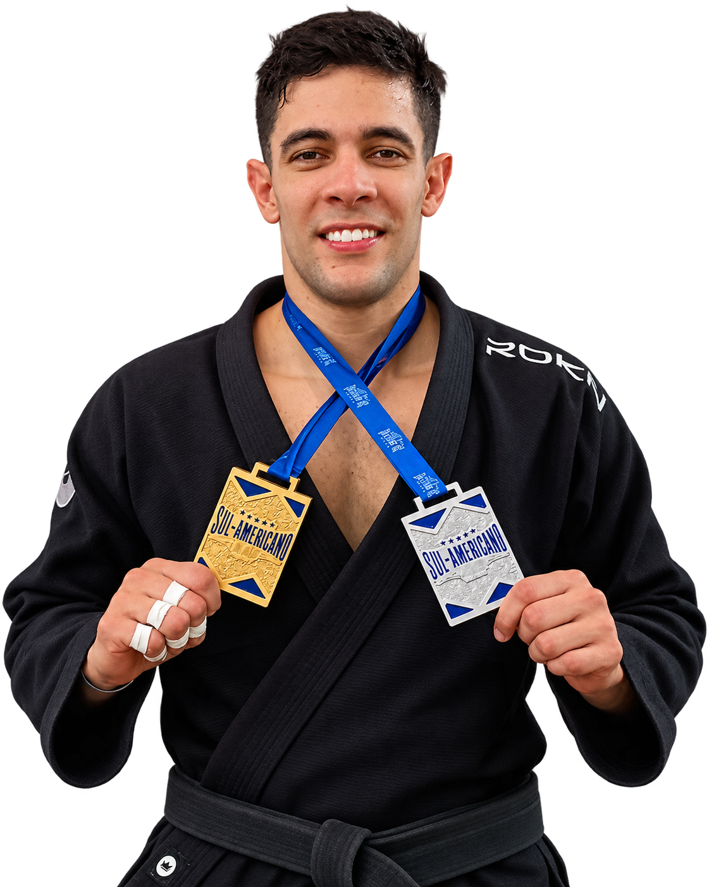

Faixa preta que uniu formação técnica e resultado no tatame. Professor na CT Caveira, campeão mundial de Jiu-Jitsu pela SJJIF, no Japão.

Rodrigo Zanella é faixa preta de Jiu-Jitsu, professor na Academia CT Caveira e formado em Licenciatura e Bacharelado em Educação Física. A combinação não é comum: a mesma disciplina que ele aplica em competição é a que leva pra sala de aula, formando atletas com base técnica sólida desde o início.
Em 2026, essa trajetória chegou ao ponto mais alto até aqui — o título de Campeão Mundial de Jiu-Jitsu pela SJJIF, conquistado no Japão. Um resultado que não nasce de um evento isolado, mas de anos de trabalho técnico, competitivo e de ensino.
Título internacional na faixa preta.
Ouro e prata em categorias do Sul-Americano de Jiu-Jitsu.
Espaço reservado pra lista completa de conquistas.
Associar uma marca a um atleta faixa preta e campeão mundial é investir em performance comprovada, não em promessa. É disciplina que já deu resultado dentro do tatame e visibilidade real junto a uma comunidade de Jiu-Jitsu engajada — de alunos, colegas de academia e quem acompanha o esporte.
Quero patrocinar